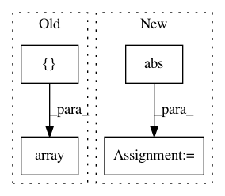

0cef3e36b3283534bc0395d167e4e2a63c5ff9e2,softlearning/environments/image_pusher.py,ImageForkReacherEnv,reset,#ImageForkReacherEnv#Any#,111
Before Change
qpos = np.random.uniform(
low=-0.1, high=0.1, size=self.model.nq) + self.init_qpos.squeeze()
target_pos = np.array([np.random.choice([-0.5, 0.5]), 0.0])
// target_pos = np.random.uniform([-1.0], [1.0], size=[2])
// target_pos = np.sign(target_pos) * np.maximum(np.abs(target_pos), 1/3)
// target_pos[np.where(target_pos == 0)] = 1.0
// target_pos[1] += 1.0
After Change
low=-0.1, high=0.1, size=self.model.nq) + self.init_qpos.squeeze()
target_pos = np.random.uniform([-1.0], [1.0], size=[2])
target_pos = np.sign(target_pos) * np.maximum(np.abs(target_pos), 1/2)
target_pos[np.where(target_pos == 0)] = 1.0
target_pos[1] += 1.0
qpos[self.TARGET_INDS] = target_pos
// qpos[self.TARGET_INDS] = [1.0, 2.0]
// qpos[self.TARGET_INDS] = self.init_qpos.squeeze()[self.TARGET_INDS]
In pattern: SUPERPATTERN
Frequency: 3
Non-data size: 4
Instances
Project Name: rail-berkeley/softlearning
Commit Name: 0cef3e36b3283534bc0395d167e4e2a63c5ff9e2
Time: 2018-07-25
Author: kristian.hartikainen@gmail.com
File Name: softlearning/environments/image_pusher.py
Class Name: ImageForkReacherEnv
Method Name: reset
Project Name: statsmodels/statsmodels
Commit Name: 1bb7f603f00783801b57d114c0eeea0c55950174
Time: 2020-08-25
Author: ezequiels.90@gmail.com
File Name: statsmodels/robust/scale.py
Class Name:
Method Name: _qn_naive
Project Name: flow-project/flow
Commit Name: ba54a88068c07af00b4cb26362788ee51af319be
Time: 2017-10-12
Author: akreidieh@gmail.com
File Name: flow/envs/lane_changing.py
Class Name: SimpleLaneChangingAccelerationEnvironment
Method Name: action_space